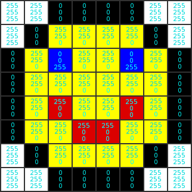

Memory lane is a long lane. It is lined with identical-looking houses on one side, and trees on the other. Each house is numbered, like houses normally are, except much more logically in that the first house is 0, the next house is 1, then 2, and so on. We’ll call this number the house’s address. The address of a house may never change.
Each one of these houses also contains a number. This number can be found by adding together all the ages of the house’s occupants. For example, if house 17 is occupied by a 1-year-old baby and a 32-year-old mother, that house represents the number 33 (because 1 + 32 = 33).
There are some serious restrictions on who may occupy a house, however. There are only eight kinds of people that may occupy a house:
| Person | Age |
|---|---|
| The Baby | 1 |
| The Toddler | 2 |
| The Preschooler | 4 |
| The Preteen | 8 |
| The Teenager | 16 |
| The Parent | 32 |
| The Grandparent | 64 |
| The Greatgrandparent | 128 |
Furthermore, no two people in a house may be of the same age. If you know a house contains the number 64, you know that it must have a single Grandparent living in it, and not two Parents, for example.
It turns out that with this system, a house can represent any number from 0 to 255.
Let’s figure out a shorthand way of representing which people live in a particular house. First let’s make a table where the first column shows the people’s names, and the second column shows how many of those people live in the house.
| Greatgrandparents | 1 |
| Grandparents | 0 |
| Parents | 1 |
| Teenagers | 0 |
| Preteens | 0 |
| Preschoolers | 1 |
| Toddlers | 1 |
| Babies | 1 |
This house contains a Greatgrandparent, a Parent, a Preschooler, a Toddler, and a Baby. Adding the ages of these people together tells us that this house represents the number 167 (because 128 + 32 + 4 + 2 + 1 = 167).
Now, if you keep writing down tables like this to represent numbers, you’ll realize that the first row of the table is unnecessary. If you can remember what order they come in (oldest to youngest), all you really have to write are the numbers in the second column, like this:
10100111
The first digit represents the Greatgrandparent, so we have one Greatgrandparent, the next digit represents the Grandparent, so we have zero Grandparents, and so on all the way to the final digit which tells us we have one Baby.
Here are the numbers 0 through 7 represented by our new shorthand:
00000000 = 0 (no people)
00000001 = 1 (one Baby)
00000010 = 2 (one Toddler)
00000011 = 3 (a Baby and a Toddler)
00000100 = 4 (one Preschooler)
00000101 = 5 (a Baby and a Preschooler)
00000110 = 6 (a Toddler and a Preschooler)
00000111 = 7 (a Baby, a Toddler, and a Preschooler)
Hopefully, I have just succeeded in tricking you into learning binary. Binary is a system of representing numbers using 1’s and 0’s. It is used by computers to represent information. Computers have their own memory lane, with billions of houses, called bytes. Bytes are made up of eight digits called bits, which can be 1’s or 0’s, and represent numbers the exact same way as I have described.
So now you know how computers represent numbers with ones and zeros. But how do computers represent actual information, like words, pictures, music, and videos?
Within computers, everything is a number. All information is represented by numbers. And all numbers are represented in binary.
First we’ll start with the simplest form of information, text. Computers usually represent letters and other visible characters using a code which pairs numbers with characters. It’s just like that “a=1 b=2 c=3 …” code you used as a kid to discreetly tell your friends to meet at the clubhouse on Saturday afternoon. Computers nowadays almost always use a code called ASCII to represent the simplest characters. You can see what numbers represent what characters in ASCII at asciitable.com. For example, my first name could be represented as follows:
| Text | J | e | r | e | m | y |
|---|---|---|---|---|---|---|
| ASCII code | 74 | 101 | 114 | 101 | 109 | 121 |
| Binary | 01001010 | 01100101 | 01110010 | 01100101 | 01101101 | 01111001 |
Six “houses” (i.e. bytes), side by side, each representing a letter from my name.
Now let’s think about how images are represented by a computer. What is an image exactly? Well, an image is really just an array of pixels, and a pixel can be described entirely by its colour.
Colours can be (and often are) stored as three numbers: the amount of red in the colour, the amount of green, and the amount of blue. By mixing different amounts of red, green, and blue, you can create just about any colour on a computer screen. So to represent a colour in a computer, we could have three bytes, one representing red, one for green, and one for blue.
If, for example, the “red” byte contained the number 255, the “green” byte contained the number 127, and the “blue” byte contained the number 0, the three bytes together would represent the colour orange by mixing 100% red with 50% green and no blue. (Remember that the lowest number a byte can represent is 0, and the highest number a byte can represent is 255.)
Here is an example of how an image of a smilie might be stored.

See, each pixel has three numbers: amount of red, green, and blue, in that order, ranging from 0 (no colour) to 255 (all colour). These numbers can be stored in a single straight line of memory, as long as we keep in mind that every three bytes represents one pixel, and as long as we know the width of the image so that we know when to start a new line.
Next we’ll look at sound and music. Again, we have to ask ourselves exactly what these things are. Sound is a wave, a vibration that travels through the air to your ears. Using a microphone a computer can take these sound waves and record the amplitude of the waves many thousand times per second as they flow in. The amplitude of a wave is a measurement of distance, so it can already be represented as a number. Therefore, computers can represent sounds with a long array of numbers representing the amplitude of the sound wave at different (and extremely close-together) points in time.
Lastly, video is just a combination of images and sound. So with the above knowledge you can easily predict how a computer might represent video with numbers.
Hopefully I have convinced you that everything in a computer can be represented with 1’s and 0’s, first by showing how numbers can be represented by 1’s and 0’s, then showing how the most common forms of information can be represented with numbers.